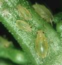

| Home |
| MUSTARD |
| 1. Mustard aphid |
| 2. painted bug |
| 3. mustard sawfly |
| 4. green peach aphid |
| 5. pea leaf-Miner |
| 6. Bihar hairy caterpiller |
| 7. Cabbage butterfly |
| 8. diamondback moth |
| questions |
| Download Notes |
PESTS OF MUSTARD (Brassica) :: Major Pests :: Green Peach Aphid
4. Green Peach Aphid: Myzus persicae (Aphididae: Hemiptera)
Distribution and status: Throughout India
Host range: Mustard, peaches, beans, potato, tobacco, turnip, radish, etc
 |
Damage symptoms: Both nymphs and adults damage plants by actively sucking their sap. After the appearance of inflorescence, the aphid congregates on terminal buds and feeds there. As a result, there is flower shedding, poor-pod formation and shriveling of grains. The insect also transmits virus diseases. The honeydew attracts sooty mould.
Management
- Sow the crop in first week of October.
- Spray 500 ml of dimethoate 30 EC or 625 ml of oxydemeton methyl 25 EC in 750 L of water/ha when aphids start congregating on top flower buds. Only one spray is needed.